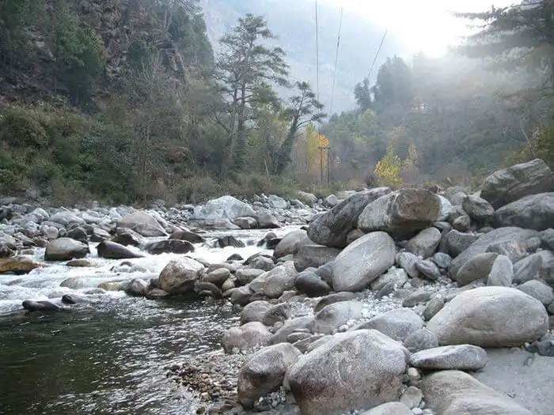
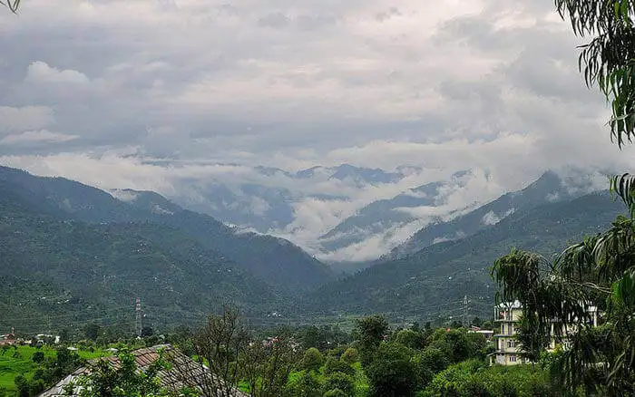

Renukaji
Renukaji is one of the best secret places in Himachal for a variety of reasons. The area has breathtaking architectural sites which shows the delicate carving of the artists. The Renuka Lake is another mirror like lake that reflects the image of God in its beauty. Renuka lake is in the Sirmaur district of Himachal Pradesh in India and it is 672 m above the sea level. It is the largest lake in Himachal Pradesh.
Distance From Delhi: 365 Kilometers.
Best Time To Visit: April to June, September to November.
Famous For: It is famous for the pristine lake that offers scenic views.

Gada Gushaini
Gada Gushaini is a very small but spectacular village in Banjar Tehsil which can leave you ogling. The beauty of crystal clear water with pebbles hindering their ways sounds like wind chaps to the ears. It is one of the best secret places in Himachal Pradesh. Gada Gushaini has not been explored by many adventure loving tourists. One finds nature at its best offering beautiful surroundings, lush green landscapes and avenues for adventure and entertainment, to name a few.
Distance From Delhi: 460 Kilometers.
Best Time To Visit: March to June.
Famous For: It is famous for splendid day hikes.

Karsog Valley
Karsog is a small town and nagar panchyat situated in the lap of Himalayas, near Shimla, at a height of 1,404 metres. It is in 7th Karsog subdivision of Mandi district in Himachal Pradesh in India. Karsog valley is a splendid gem. It is situated in the middle of orchards of apples and compact hilly woods of deodars and pines. You will have the time of your life here. Make sure to indulge in apple picking here with the locals. Add this and other secret places in Himachal to your itinerary.
Distance From Delhi: 472 Kilometers.
Best Time To Visit: March to June, September to November.
Famous For: It is famous for its lush green mountains and massive fertile lands.
Jibhi
Jibhi is a little known scenic hamlet in the Banjar Valley or Tirthan Valley of Himachal Pradesh. It can be easily approached from the Chandigarh-Manali Highway. It is accessible from here. The way to Jibhi is worth traveling watching around the panoramic beauty. There are many eating cafes and dhabas around to enjoy the local exquisite cuisine. The small village looks like a fairytale story. It is perhaps among the romantic spots for a honeymoon in Himachal Pradesh.
Distance From Delhi: 512 Kilometers.
Best Time To Visit: March to May.
Famous For: It is famous for being the most well-kept fishing camps.
Prini – A Serene Mountain Village
Prini village is located in Manali Tehsil of Kullu district in Himachal Pradesh, India. The small village has a splendid waterfall in the Manali–Jagatsukh road. The village is covered with paddy fields and has well established transportation system. The moisture in the air smells like petrichor–as refreshing as the mud’s scent after first rain. Make sure to stop by here to take in the lush gree surroundings and the beauty of this quaint hamlet. This is among the best hill stations in Himachal Pradesh.
Distance From Delhi: 539 Kilometers.
Best Time To Visit: All year long.
Famous For: It is famous for being home to people from various backgrounds and ethnicities.
Charang Ghati Pass
The pass is new to your ears, but if you love trekking then this is where you should be heading. Trekking in Charang Ghati Pass starts from Kinnaur. The parikrama around the beautiful hills on the backside offers views that are worth dying for. Charang Valley Trek is one of the most difficult treks in Himachal. Make sure to take a guide with you if you plan to undertake this trek. Also make sure to trek this region in the peak season.
Distance From Delhi: 579 Kilometers.
Best Time To Visit: June to September.
Famous For: It is famous for its gorgeous trekking trails.
Cliffhanger – Always A Tricky Ride
The Dhankar village and Gompa located in the Spiti valley between Kaza and Tabo is also known as Cliffhanger. The place seems as if the earth has ended its sphere in Cliffhanger. The hill top view and the adventure attached to the place is the charm of the latitude. Make sure to bike there or take a bus and stop by there to take in the dangerous yet magnificent views. If these views don’t blow your mind away, we don’t know what will.
Distance From Delhi: 760 Kilometers.
Best Time To Visit: February to June.
Famous For: It is famous for being the most adventurous road in India.
 Kalpa – The Land Of Beautiful Apple Orchards
This is one of the biggest villages in Kinnaur district, which is surrounded by the lush-greenery and snow-covered mountains of Kinnaur Kailash. Alongside that, there is a myriad of apple orchards where the apples are the main crops to sell for the locals. From here one can enjoy the sight of the Kailash shivling which changes its color throughout the day. There is also a temple which is devoted to goddess Chandika, which is located at a distance of 11 kms from Kalpa. This is one of the best-hidden places in Himachal to explore.
Kalpa – The Land Of Beautiful Apple Orchards
This is one of the biggest villages in Kinnaur district, which is surrounded by the lush-greenery and snow-covered mountains of Kinnaur Kailash. Alongside that, there is a myriad of apple orchards where the apples are the main crops to sell for the locals. From here one can enjoy the sight of the Kailash shivling which changes its color throughout the day. There is also a temple which is devoted to goddess Chandika, which is located at a distance of 11 kms from Kalpa. This is one of the best-hidden places in Himachal to explore.
Distance From Delhi: 565 Kms.
Best Time To Visit: April-June.
Famous For: Ancient temples, Apple Orchards